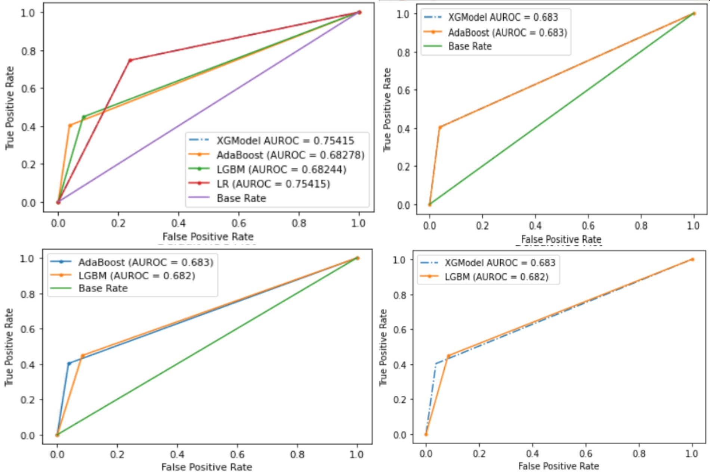
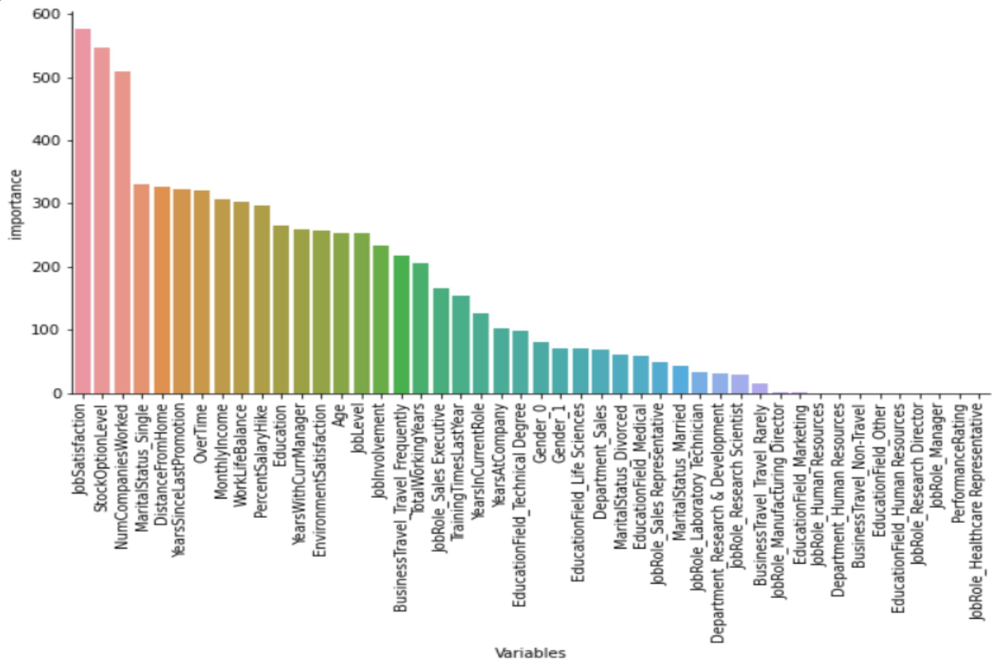
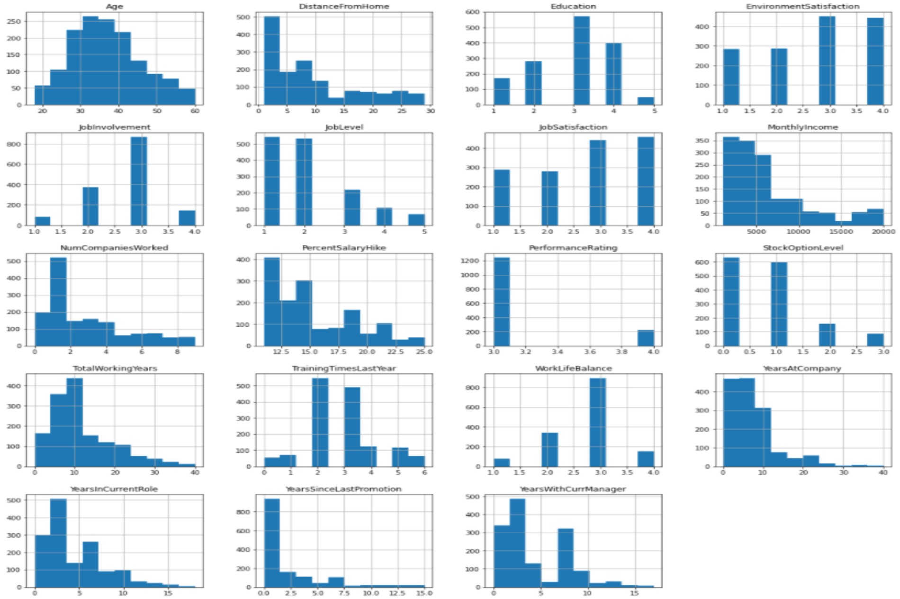
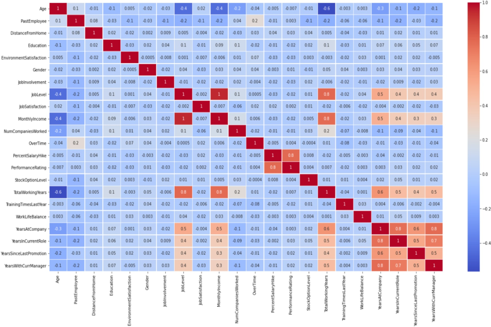

Employee turn-over (also known as "employee churn") is a costly problem for companies. The true cost of replacing an employee can often be quite large. A study by the Center for American Progress found that companies typically pay about one-fifth of an employee’s salary to replace that employee, and the cost can significantly increase if executives or highest-paid employees are to be replaced. In other words, the cost of replacing employees for most employers remains significant. This is due to the amount of time spent to interview and find a replacement, sign-on bonuses, and the loss of productivity for several months while the new employee gets accustomed to the new role.
1. Importing essential libraries like:
pandas for perfroming actions like importing data, deleting columns.
Numpy for performing mathematical calculations on arrays.
plotly, matplotlib, seaborn for plotting interactive graphs.
imblearn package which has class over_sampling and in it function named SMOTE whihc is useful in balancing highly imbalanced dataset.
and most important package for Machine Learning that is Sklearn which helps in eveluating result, splliting the dataset, tunning the hyper-paramentes, preprocessing the data,etc.
2.
Data is imported using padnas package and csv file is loaded. It has 27 columns of which 8 are of data type object and rest of integer.
After performing Exploratory Data Analysis:
- Many histograms are tail-heavy; indeed several distributions are right-skewed (e.g. MonthlyIncome DistanceFromHome, YearsAtCompany). Data transformation methods may be required to approach a normal distribution prior to fitting a model to the data.
- Age distribution is a slightly right-skewed normal distribution with the bulk of the staff between 25 and 45 years old.
- EmployeeCount and StandardHours are constant values for all employees. They're likely to be redundant features.
- Employee Number is likely to be a unique identifier for employees given the feature's quasi-uniform distribution.
- Laboratory Technican has the highest pay followed by Sales Executive and Research Scientist.
- Research Director having least pay rate followd by manager and Helthcare Representative.
3. Data Pre-processing and Wrangling:
Age if converted into binary form where employee above 39 has value 0 else 1, for PastEmployee tag Yes = 1 and No = 0 is assigned.
Also Gender and Overtime class is converted using apply() and user defined function. Pandas get_dummies() function is used for converting other categorical variables into dummy/indicator variables.
Data is divided where X:Independent Variables and Y:Target Varivable. Normalization is performed so that each feature has mean 0 and variance 1.
Then data is splitted into tain-set and test-set in the ratio of 70:30 respectively. To balance the imbalance data SMOTE techniques is implemented.
4. Hyper-paramentes tuning: RandomizedSearchCV and GridSearchCV is implemented to find the best parameters for the models.
| Model | Tuning Time | Best Score |
|---|---|---|
| XGBoost | 113.663 s | 0.9836 |
| AdaBoost | 4.662 s | 0.8731 |
| LightGBM | 17.968 s | 0.8649 |
| Logistic regression | 51.291 s | 0.8735 |
| Model | True Positive | True Negative | False Positive | False Negative | Accuracy | Recall | F1 | AUCROC |
|---|---|---|---|---|---|---|---|---|
| XGBoost | 27 | 360 | 14 | 40 | 0.8775 | 0.6585 | 0.5000 | 0.6827 |
| AdaBoost | 27 | 360 | 14 | 40 | 0.8775 | 0.6585 | 0.5000 | 0.6827 |
| LightGBM | 30 | 343 | 31 | 37 | 0.8458 | 0.4918 | 0.4687 | 0.6824 |
| Logistic Regression | 50 | 285 | 89 | 17 | 0.7596 | 0.3597 | 0.4854 | 0.7541 |
| Model | First | Second | Third | Least |
|---|---|---|---|---|
| XGBoost | Overtime 0.255203 | JobLevel 0.087756 | JobRole_Sales Executive 0.071910 | JobRole_Research Director 0.00000 |
| AdaBoost | WorkLifeBalance 0.0875 | TrainingTimeLastYear 0.0875 | TrainingTimeLastYear 0.0750 | Department_Human Resources 0.0000 |
| LightGBM | JobSatisfaction 576 | StockOptionLevel 546 | NumCompaniesWorked 508 | PerformanceRating 0s |
Job With Highest Pay
ROC Graph
LightGBM Important Features
Class Histogram
Heat-Map